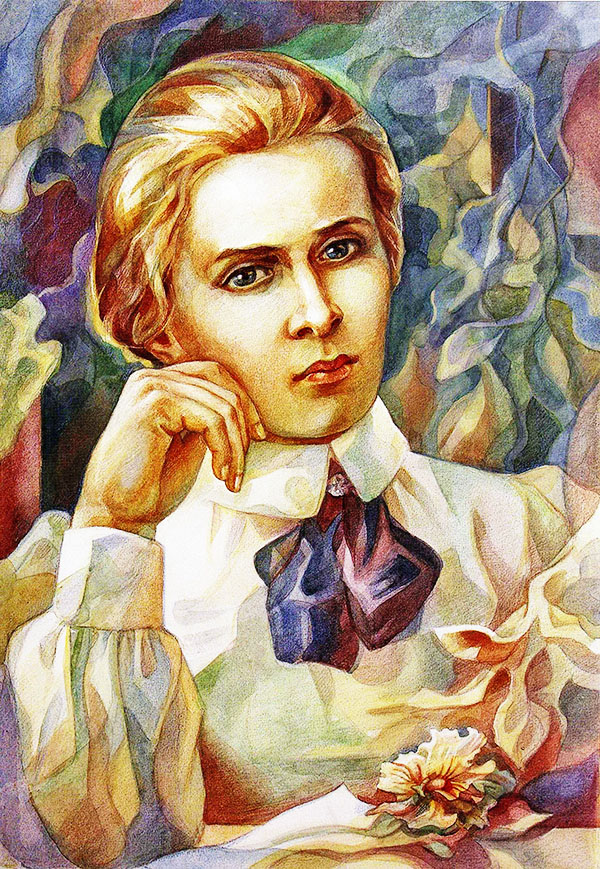

| Name |
Lesia Ukrainka |
| Login |
@_mavka_ |
| Registration |
2017/07/24 |
BIO
Lesya Ukrainka is a pen name of Larisa Kosach. She was born in Novograd-Volynsky on February 15, 1871. Lesya’s father was a lawyer and her mother was a Ukrainian wtiter. She wrote under pen name Olena Pchilka.